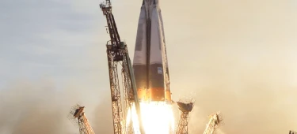

THE TERMINOLOGY…
LAUNCH VEHICLE
A launch vehicle or carrier rocket is a rocket-propelled vehicle used to carry a payload from Earth's surface to space, usually to Earth orbit or beyond. Our WEB-X carrier rocket is the most powerful in operation. Standing 150 metres tall, it's quite an awe-inspiring sight on the launch pad!